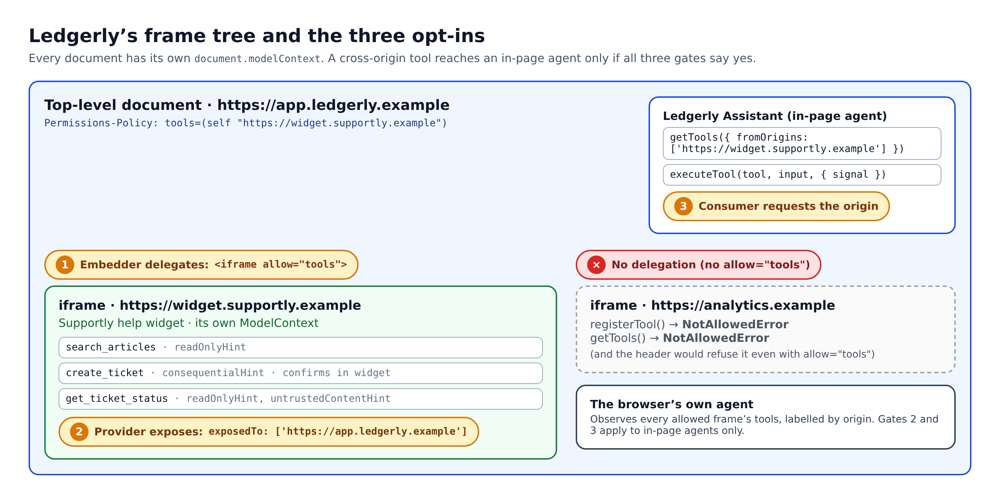

“I wonder if it would be better to reposition this idea as a general way to call functions in other environments.”
— Jake Archibald, webmachinelearning/webmcp issue #2361
A page is more than one document
Chapters 4 to 6 treated a WebMCP site as a single page: Fjord Table registers its tools on document.modelContext, and an agent in the browser finds and calls them. That is the common case, but plenty of real pages aren't one document. A SaaS dashboard embeds a payments form from its processor, a chat bubble from a support vendor, a map, a video player and two analytics frames. Every <iframe> holds a document of its own, often from a different origin, and every document has its own ModelContext.2
This chapter is about what happens to tools in that tree of documents. It answers three questions:
- Who may register tools? The
toolsPermissions Policy decides which frames get to use the API at all. - Who may see and call them?
exposedToon the provider’s side andfromOriginson the consumer’s side decide whether tools cross an origin boundary. - Who is the agent? Besides the browser’s own agent, the specification has room for agents written in JavaScript that live in the page (
getTools()andexecuteTool()) and, in practice, for agents that live in browser extensions.
The running example is the book’s third project, the Helpdesk Widget. Supportly, a fictional support-software vendor, serves an embeddable help widget from https://widget.supportly.example. Ledgerly, a fictional invoicing dashboard at https://app.ledgerly.example, embeds it. The widget registers three tools: search_articles and get_ticket_status, which only read, and create_ticket, which opens a ticket with Supportly’s staff. Ledgerly has an assistant of its own, a small in-page agent that should be able to use Supportly’s tools as well as Ledgerly’s. Nobody else on the page should be able to.
Everything below was checked against the WebMCP Draft Community Group Report dated 15 October 2026, Chrome’s developer documentation and the open issues and pull requests in the webmachinelearning/webmcp repository, all read on 14 October 2026 and re-checked on 15 October 2026.3 Every behaviour marked “tested” was observed in Chromium 156.0.8078.4 with the WebMCPTesting feature switched on (the switch behind chrome://flags/#enable-webmcp-testing4), with Ledgerly and Supportly served from two different local origins. The tests are in the book’s demos repository, in chapters/07-frames-origins-agents/, and all 29 of them pass. Where Chromium and the draft disagree, the text says so.

tools feature to Supportly’s iframe (gate 1). Supportly registers its tools with exposedTo: ['https://app.ledgerly.example'] (gate 2). Ledgerly’s agent asks for them with getTools({ fromOrigins: ['https://widget.supportly.example'] }) (gate 3). The analytics frame has no delegation, so it can’t use WebMCP at all.Figure 7.1 shows the shape of the whole chapter. A cross-origin tool reaches an agent only if three different parties have each said yes: the embedder, the tool provider and the tool consumer. If any of them says nothing, the answer is no.
Two kinds of agent, two ways to see tools
Before the gates, it helps to be precise about who is looking.
The specification describes a browser agent: the assistant built into the browser, which “does not run JavaScript on the page.” It gets a view of the page by performing an observation, an implementation-defined snapshot that includes, at minimum, a tool map. The observation algorithm walks every document in the tab’s frame tree and records, for each document, an observed tool collection holding that document’s origin and its tools. A note in the draft adds that user agents “are expected to include the origin field to avoid confusion that could be exploited by an attacker.”5 In other words, the browser agent sees the tools of every frame, labelled by origin. The exposedTo and fromOrigins options described below don’t apply to it, because it isn’t a document; only the Permissions Policy decides which frames can register tools in the first place.
The second kind is an in-page agent: an agent written in JavaScript that runs inside a document, “and possibly living in iframes,” in the draft’s words.2:1 It uses two methods that Chapter 5 set aside: getTools() to discover tools and executeTool() to call one. Because an in-page agent is just script in some origin, it is subject to the same-origin policy like any other script, and that is what the two-sided opt-in is for.
A third kind, the extension agent, sits between the two. It runs JavaScript, but with the privileges of a browser extension. It gets its own section later in this chapter.
Gate 1: the tools Permissions Policy
The default is 'self'
Access to the whole API is gated behind a policy-controlled feature called "tools", “which has a default allowlist of 'self'.”6 Every method checks it first. registerTool(), getTools() and executeTool() each begin by asking whether the calling document “is allowed to use the tools feature” and, if not, return a promise rejected with a NotAllowedError DOMException.7 getTools() also skips any document in the tree that isn’t allowed to use the feature, and the tool-change notification skips them too.8
With the default allowlist, that means:
- the top-level document can use WebMCP;
- same-origin iframes can use it, with no markup needed;
- cross-origin iframes can’t, unless the embedder delegates the feature to them.
Chrome’s Imperative API guide puts it the same way: “Tool registration is disabled by default in cross-origin iframes. A page must delegate access using the tools Permissions Policy.”9
Delegating to one frame with allow="tools"
Ledgerly delegates the feature to Supportly’s frame with the iframe’s allow attribute. Listing 7.1 is Ledgerly’s whole page.
tools to it (ledgerly/index.html)<!doctype html>
<html lang="en">
<head>
<meta charset="utf-8">
<title>Ledgerly · Invoices</title>
<link rel="stylesheet" href="ledgerly.css">
</head>
<body>
<header><strong>Ledgerly</strong> · Invoices</header>
<main id="dashboard">…</main>
<aside id="assistant" aria-label="Ledgerly Assistant">
<form id="ask"><input name="goal" placeholder="Ask the assistant"><button>Ask</button></form>
<ol id="transcript"></ol>
</aside>
<!-- Supportly's help widget, from a third-party origin. -->
<iframe id="supportly"
title="Supportly help"
src="https://widget.supportly.example/embed.html?customer=ledgerly"
allow="tools"></iframe>
<script type="module" src="agent/assistant.js"></script>
</body>
</html>
In an allow attribute, a feature name with no allowlist uses the default value src: the feature is allowed in this iframe “as long as the document loaded into it comes from the same origin as the URL in its src attribute.”10 So allow="tools" here means “Supportly’s documents in this frame may use WebMCP.” If the widget navigates somewhere else, the delegation doesn’t follow it.
Setting the policy for the whole page
The allow attribute delegates, but it doesn’t restrict. Any other iframe on the page with allow="tools" would get the same power, and a marketing team’s tag manager can add iframes. The Permissions-Policy response header sets the ceiling for the document and everything inside it. Listing 7.2 is the header Ledgerly sends with its HTML.
Permissions-Policy: tools=(self "https://widget.supportly.example")
The header’s allowlist uses quoted origins, self and *; an empty list, (), disables the feature in the top-level document and in every nested frame.10:1 With Listing 7.2 in place, only Ledgerly itself and Supportly’s origin can ever be granted tools, whatever iframes appear later. The iframe still needs its own allow="tools": the header says who may be granted the feature, and the attribute grants it to a particular frame.
For pages that shouldn’t expose tools at all, the specification lists the empty allowlist as a mitigation in its own right. A Permissions-Policy: tools=() header makes the feature “unavailable to the document and its descendants,” it applies “to every descendant frame, including both same-origin and cross-origin ones,” and the user agent “enforces this before script runs on the page, protecting against malicious scripts or dependencies from using WebMCP APIs.”11 Ledgerly’s settings pages, where nobody needs an agent, are good candidates.
Table 7.1 shows what Supportly’s widget experienced under each configuration in the tests.
Table 7.1 — Can Supportly’s cross-origin iframe register tools? (tested, Chromium 156)
| Ledgerly’s header | allow on the iframe |
Result inside the widget |
|---|---|---|
| none | none | registerTool() rejects with NotAllowedError |
| none | allow="tools" |
Registers |
tools=(self "https://widget.supportly.example") (Listing 7.2) |
allow="tools" |
Registers |
tools=(self) |
allow="tools" |
NotAllowedError: the header wins over the attribute |
tools=() |
allow="tools" |
NotAllowedError in the widget, and Ledgerly’s own getTools() rejects with NotAllowedError too |
The error message Chromium gives is: Access to the feature "tools" is disallowed by permissions policy. A same-origin iframe with no allow attribute registered its tools without complaint, as the 'self' default predicts.
Feature detection doesn’t see the policy
One result in those tests deserves its own paragraph. In every blocked case, 'modelContext' in document was still true inside the widget. The modelContext attribute exists on every Document in a secure context where the browser supports WebMCP;2:2 the policy is checked when you call a method, not when you look for the attribute. Chapter 5 recommended detecting the API, then awaiting registration and catching errors. In an embeddable widget that advice is no longer optional. A widget is embedded by customers you don’t control, and some of them will forget allow="tools". Listing 7.3 returns 'blocked' in that case instead of throwing, so the widget can still work as an ordinary help widget for humans.
Gates 2 and 3: exposedTo and fromOrigins
Getting past the Permissions Policy only means the widget can register tools. By default nobody outside Supportly’s origin can see them. Chrome’s security guide says it directly: “By default, other websites or cross-origin iframes can’t observe or interact with your tools.”13 Crossing that line takes one opt-in from each side.
The provider’s side: exposedTo
registerTool() takes a second argument, the ModelContextRegisterToolOptions dictionary. Chapter 5 used its signal member. The other member is exposedTo, “an array of origins that control which documents this tool is exposed to, in the current document’s tree.”14 Listing 7.3 is the widget’s registration code.
// Supportly help widget: tools for the embedding page's agent.
// Runs inside https://widget.supportly.example/embed.html.
import { helpdesk } from './helpdesk-api.js';
import { confirmTicket } from './widget-ui.js';
// Which origins each customer has registered with Supportly.
const CUSTOMER_ORIGINS = {
ledgerly: ['https://app.ledgerly.example'],
};
export async function registerWidgetTools(signal) {
if (!('modelContext' in document)) return 'unsupported';
const customer = new URLSearchParams(location.search).get('customer');
const exposedTo = CUSTOMER_ORIGINS[customer] ?? []; // ①
const mc = document.modelContext;
try {
await mc.registerTool({
name: 'search_articles',
title: 'Search help articles',
description:
'Search the Supportly help centre for articles that answer a ' +
'question about the product. Returns titles, links and a short excerpt.',
inputSchema: {
type: 'object',
properties: { query: { type: 'string', maxLength: 200 } },
required: ['query'],
},
annotations: { readOnlyHint: true },
async execute({ query }) {
if (typeof query !== 'string' || !query.trim()) {
return { status: 'error', code: 'INVALID_INPUT',
message: 'Provide "query" as a non-empty string.' };
}
return { articles: await helpdesk.search(query.slice(0, 200)) };
},
}, { signal, exposedTo }); // ②
await mc.registerTool({
name: 'create_ticket',
title: 'Open a support ticket',
description:
'Open a support ticket with the Supportly team on the user\'s behalf. ' +
'The user reviews and sends it in the help widget. Returns the ticket ID.',
inputSchema: {
type: 'object',
properties: {
subject: { type: 'string', maxLength: 120 },
body: { type: 'string', maxLength: 4000 },
priority: { type: 'string', enum: ['low', 'normal', 'high'] },
},
required: ['subject', 'body', 'priority'],
},
annotations: { consequentialHint: true },
async execute({ subject, body, priority }, { signal }) {
if (!subject?.trim() || !body?.trim()) {
return { status: 'error', code: 'INVALID_INPUT',
message: 'Provide a non-empty "subject" and "body".' };
}
if (!['low', 'normal', 'high'].includes(priority)) {
return { status: 'error', code: 'INVALID_INPUT',
message: '"priority" must be low, normal or high.' };
}
const draft = { subject: subject.slice(0, 120), body: body.slice(0, 4000), priority };
const sent = await confirmTicket(draft, signal); // ③
if (!sent) {
return { status: 'cancelled_by_user',
message: 'The user closed the ticket form without sending it.' };
}
const ticket = await helpdesk.createTicket(draft);
return { status: 'created', ticketId: ticket.id };
},
}, { signal, exposedTo });
await mc.registerTool({
name: 'get_ticket_status',
title: 'Check a support ticket',
description:
'Get the status and latest reply of a Supportly ticket by its ID ' +
'(for example SUP-1042).',
inputSchema: {
type: 'object',
properties: { ticketId: { type: 'string', pattern: '^SUP-[0-9]+$' } },
required: ['ticketId'],
},
annotations: { readOnlyHint: true, untrustedContentHint: true }, // ④
async execute({ ticketId }) {
if (!/^SUP-[0-9]+$/.test(ticketId ?? '')) {
return { status: 'error', code: 'INVALID_INPUT',
message: '"ticketId" looks like SUP-1042.' };
}
const ticket = await helpdesk.getTicket(ticketId);
if (!ticket) {
return { status: 'error', code: 'TICKET_NOT_FOUND',
message: `No ticket ${ticketId} on this account.` };
}
// The ticket's own state is ticketState, so status stays free for outcomes.
return { ticketId, ticketState: ticket.status, latestReply: ticket.latestReply };
},
}, { signal, exposedTo });
return 'registered';
} catch (err) {
if (err.name === 'NotAllowedError') return 'blocked'; // ⑤
throw err;
}
}
The markers point at the parts that matter for this chapter.
① Who gets the tools. The widget doesn’t trust the page that embeds it to say who it is. It reads a customer ID from its own URL and looks up the origins that customer registered with Supportly. In a real product the table would come from Supportly’s server, keyed by the customer’s account. If someone embeds the widget with ?customer=ledgerly on a site that isn’t Ledgerly, nothing leaks: exposedTo names the origin that may consume the tools, and the browser checks it against the caller’s actual origin. An unknown customer gets an empty list, which exposes the tools to nobody outside Supportly. The tests cover that case: the widget still registers its tools, and Ledgerly’s agent sees none of them.
② One option per registration. Each registerTool() call gets the same signal and the same exposedTo. Exposure is per tool, so a vendor could expose search_articles widely and keep create_ticket for a shorter list.
③ The provider confirms. create_ticket has consequences, so it carries consequentialHint (Chapter 6) and asks the user in the widget’s own UI before anything is sent. Who should ask is a real design question once two companies are involved. Here the answer is the tool’s owner: Supportly can’t know whether Ledgerly’s agent asked the user, but it can always ask in its own frame. The confirmation card is wired to the call’s signal, so if the agent cancels, the card disappears.
④ Content Supportly doesn’t vouch for. Ticket replies are typed by people, and a customer can type anything, including text written to steer an agent. untrustedContentHint tells the consumer that this output shouldn’t be read as instructions (Chapters 6 and 12).
⑤ The policy failure is a value. As discussed above, a missing allow="tools" surfaces as NotAllowedError from the first registerTool() call. The widget reports 'blocked' and carries on as a widget for humans.
The draft is strict about the origins themselves. Each entry is run through the URL parser, and if parsing fails “or its origin is not potentially trustworthy,” registration rejects with a SecurityError.7:1 “Potentially trustworthy” means, roughly, HTTPS or a local origin such as http://localhost, which is why the tests can run on two local ports. In Chromium 156 both a plain-HTTP origin and a string that isn’t a URL at all were refused with SecurityError: Only secure origins are allowed in the exposedTo list. (tested).
The consumer’s side: fromOrigins
The second opt-in belongs to the agent. getTools() takes a ModelContextGetToolOptions dictionary with one member, fromOrigins: “Documents whose origin appears in this list, or are same-origin with the caller, have their tools queried. An empty list only includes same-origin documents.”15 Its entries are validated like exposedTo’s, and an insecure origin rejects with SecurityError.
The rule fits in a sentence from the method steps. For each document in the tree, a tool is included only if the document is allowed to use tools, the document is same-origin with the caller or listed in fromOrigins, and the tool “is exposed to” the caller’s origin.8:1 The last check is a four-line algorithm: return true if the tool’s owner is same-origin with the caller, or if the caller’s origin is in the tool’s exposed origins; otherwise return false.16
Chrome’s guide sums up the effect for developers: “Even if a tool is exposed to your origin, you must still explicitly request it from the hosting origin using the fromOrigins option in getTools().”9:1 Table 7.2 lists the three opt-ins side by side.
Table 7.2 — The three opt-ins for a cross-origin tool
| Gate | Who decides | Mechanism | Default | Failure |
|---|---|---|---|---|
| 1. Delegation | The embedder (Ledgerly) | Permissions-Policy header and allow="tools" on the iframe |
'self': top-level and same-origin frames only |
NotAllowedError from any method |
| 2. Exposure | The tool provider (Supportly) | registerTool(tool, { exposedTo }) |
Same-origin callers only | The tool is silently absent from the consumer’s list |
| 3. Request | The tool consumer (Ledgerly’s agent) | getTools({ fromOrigins }) |
Same-origin documents only | The document’s tools are silently absent |
Two things about the table are easy to miss. First, gates 2 and 3 fail silently. A tool you didn’t expose, or an origin you didn’t ask for, simply isn’t in the list; no error tells you why. When a cross-origin tool is missing, check all three gates in order. Second, gate 3 exists so that a page isn’t flooded with tools it never asked for. A pull request that would document all of this in the specification’s security section says the mutual consent “prevents unsolicited tool-list pollution and unauthorized cross-origin tool invocation.”17
Both directions work. Exposure is about origins, not about who embeds whom. In the tests, Ledgerly registered a tool with exposedTo: [Supportly’s origin], and the widget, asking with fromOrigins: [Ledgerly’s origin], found and called it. A vendor widget could use that to ask the host for context (“which invoice is the user looking at?”) without a custom postMessage protocol. A tool Ledgerly registered without exposedTo stayed invisible to the widget.
exposedTo also drives events. When a tool is registered, the browser notifies every document in the tree that is allowed to use tools and to which the tool is exposed, by firing toolchange at its ModelContext.18 In the tests, Ledgerly’s toolchange listener fired when the widget registered its exposed tools. The event carries no details, so a listener has to call getTools() again to find out what changed. Listing 7.5 does exactly that.
getTools() and executeTool(): building an in-page agent
With the gates open, Ledgerly can build its assistant. The two methods are small. Listing 7.4 shows their shape from the specification’s IDL.
partial interface ModelContext {
Promise<sequence<RegisteredTool>> getTools(optional ModelContextGetToolOptions options = {});
Promise<DOMString> executeTool(RegisteredTool tool,
optional object inputObject,
optional ModelContextExecuteToolOptions options = {});
};
dictionary ModelContextGetToolOptions { sequence<USVString> fromOrigins; };
dictionary ModelContextExecuteToolOptions { AbortSignal signal; };
dictionary RegisteredTool {
required DOMString name;
DOMString title;
required DOMString description;
object inputSchema;
required Window window;
required USVString origin;
ToolAnnotations annotations;
};
(The real IDL declares both methods on ModelContext itself; partial here just leaves out what Chapter 5 already covered.)20
What getTools() returns
getTools() resolves to a list of RegisteredTool dictionaries.21 Most members repeat what the tool’s owner registered: name, title, description, a deep copy of inputSchema, and the four annotation hints. Two members are new:
windowis theWindowof the document that registered the tool. In the tests it was strictly equal to the iframe’scontentWindow.originis the serialized origin of that document. The draft explains that it matters for cross-origin tools, because the consumer “cannot otherwise get the tool’s origin from its window.”21:1
The list covers every document in the caller’s top-level frame tree: the method walks the inclusive descendants of the tab’s top-level document, not just the caller’s own descendants.8:2 That is why the widget, a child frame, could find Ledgerly’s tools above it. Documents in other tabs, popups and openers aren’t included; issue #227, open since 21 July 2026, argues that discovery should cover the whole browsing context group.22 The list is sorted by tool name across all frames, which the tests confirmed: Ledgerly’s find_invoice came back between Supportly’s create_ticket and get_ticket_status. Don’t rely on list position to tell frames apart.
That last point leads to a practical problem. Two frames can register tools with the same name. Supportly has search_articles; a documentation widget from another vendor might have one too. Names are unique only within one document’s tool map. A consumer that hands tools to a language model needs names that are unique across the page, so Listing 7.5 keys each tool by vendor and name.
// Ledgerly's in-page agent: find the tools it is allowed to use.
const SUPPORTLY = 'https://widget.supportly.example';
export async function discoverTools() {
// Same-origin tools come back by default; Supportly's only if we ask
// for its origin AND Supportly exposed them to us.
const tools = await document.modelContext.getTools({ fromOrigins: [SUPPORTLY] });
// Key every tool by origin + name: two frames may both register "search".
const catalog = new Map();
for (const tool of tools) {
const vendor = tool.origin === location.origin ? 'ledgerly' : 'supportly';
catalog.set(`${vendor}__${tool.name}`, tool);
}
return catalog;
}
export function watchTools(onChange, signal) {
let pending = null;
document.modelContext.addEventListener('toolchange', () => {
// toolchange carries no details, and frames register tools one by one,
// so coalesce bursts and re-read the whole list.
clearTimeout(pending);
pending = setTimeout(async () => onChange(await discoverTools()), 50);
}, { signal });
}
watchTools() debounces toolchange. In the tests the widget registered its three tools one after another, and Ledgerly received a separate event for each. Re-reading the list once after the burst is cheaper than three times, and the draft itself warns that the timing of toolchange relative to other tasks “cannot be relied upon.”18:1
What executeTool() does
executeTool(tool, input, { signal }) runs a tool “on the document it was registered on” and resolves to “the stringified result of the tool’s execution.”20:1 Chapter 6 followed a call from the agent’s side; the cross-origin details are what is new here.
It takes a dictionary, not a handle. The first argument is a RegisteredTool dictionary. Because it’s a dictionary, any object with the right members will do. In Chromium a shallow copy of a tool from getTools() executed normally (tested). What the browser checks is that window is a real Window in the same tab, that the target document’s origin matches origin, that a tool with that name exists there, and that it is exposed to the caller.23 You can only get a cross-origin Window reference from the frame tree, so in practice the dictionary comes from getTools().
It doesn’t let you probe. If any of those last three checks fails, the draft rejects with the same NotFoundError, on purpose. A note explains that this “prevents a cross-origin caller from using fabricated RegisteredTool dictionaries to probe” the target’s current origin or to “enumerate private tools not exposed” to the caller.23:1 Chromium 156 gives the same answer for all of them too, but the name is different: a copy with a made-up name, and a copy with a forged origin, both rejected with UnknownError and the same message, “The operation failed for an unknown transient reason” (tested). The spirit of the rule holds; the exception name doesn’t match the draft yet. That is spec lag, not a different design: the draft itself used UnknownError for these cases until 8 October 2026, when pull request #339 (commit b206dae) replaced it with NotFoundError and the other specific names, and Chromium 156 still implements the older text.24
Only a name crosses back. When a tool fails, the caller sees a DOMException whose name comes from a small table of platform failures. The draft says that passing only the error’s name, rather than “any internal JavaScript exception object or message thrown in targetDocument,” prevents “leaking provider implementation details or stack traces across origins.”23:2 The tests checked this from the attacker’s side: the widget registered a tool that threw new Error('db password is hunter2'), and Ledgerly’s agent got UnknownError: Tool was executed but the invocation failed… with no trace of the message. Recoverable failures still belong in the return value, as Listing 7.3 does with { status: 'error', code: 'INVALID_INPUT', message: '"priority" must be low, normal or high.' }, using the result vocabulary Chapter 11 sets out.
Cancellation crosses origins. The caller’s signal is wired to the target. In the tests, aborting Ledgerly’s controller rejected executeTool() with an AbortError in Ledgerly, aborted the signal that Supportly’s execute callback received, and fired toolcancel at the widget’s ModelContext. The widget’s confirmation card disappeared, as Listing 7.3 intended. This matches the draft’s cancellation steps exactly.25 Chapter 6 covers cancellation in full, including why a cancelled tool may still finish its work.
Listing 7.6 wraps all of that into one function the agent loop can call.
// Run one tool for the in-page agent, with a deadline and a stop button.
export async function runTool(tool, input, { stop, timeoutMs = 15000 } = {}) {
const signal = AbortSignal.any([stop, AbortSignal.timeout(timeoutMs)]);
const hints = tool.annotations ?? {};
try {
const text = await document.modelContext.executeTool(tool, input, { signal });
let value = text;
try { value = JSON.parse(text); } catch { /* plain string result */ }
return {
ok: true,
origin: tool.origin,
// Content the tool owner itself doesn't vouch for: label it, never obey it.
untrusted: hints.untrustedContentHint === true,
value,
};
} catch (err) {
// Across origins you only ever get an exception name, never the message
// or stack from the other document.
const reason = signal.aborted
? (stop.aborted ? 'stopped by user' : 'timed out')
: err.name;
return {
ok: false,
origin: tool.origin,
reason,
// Never retry something with real-world effects on your own.
retryable: !hints.consequentialHint && reason !== 'stopped by user',
};
}
}
AbortSignal.any() combines the user’s stop button with a timeout, so one signal covers both. When the call fails, the code checks the signal first: a timeout and a user’s stop both reject with an abort-type error, and the agent needs to know which. Results flagged with untrustedContentHint are labelled so the planner can treat them as data rather than instructions, and tools flagged as consequential are never retried automatically: if create_ticket timed out, the user may have clicked Send a moment too late, and a retry could open a second ticket.
Table 7.3 collects what the tests observed when cross-origin calls went wrong, next to what the draft specifies.
Table 7.3 — Cross-origin call failures: the 15 October draft and Chromium 156 (tested)
| Situation | Draft | Chromium 156 |
|---|---|---|
The tool’s execute throws |
OperationError (“tool rejected”) |
UnknownError, generic message |
Forged name or forged origin |
NotFoundError |
UnknownError (same message for both) |
| Caller aborts its signal | Rejects with the signal’s reason; target gets toolcancel |
AbortError; target’s signal aborted; toolcancel fired |
| Target iframe navigates away mid-call | AbortError (“target document unloaded”) |
UnknownError |
| Target iframe removed mid-call | AbortError (“target document unloaded”) |
UnknownError |
Non-secure origin in exposedTo / fromOrigins |
SecurityError |
SecurityError |
| Calling document blocked by policy | NotAllowedError |
NotAllowedError |
Sources: the draft’s tool execution error table and method steps;26 Chromium results from this chapter’s tests, re-run on 15 October 2026. Every UnknownError in the Chromium column is a case the draft named UnknownError until 8 October 2026.24:1
Chrome’s guide adds one more case: executeTool() returns “null when a navigation is triggered.”9:2 In this chapter’s test, where the widget’s tool navigated the widget’s own frame, the caller got UnknownError, not null. Treat both as “the call didn’t complete; check the page,” and design consequential tools so that a lost answer can be checked afterwards: create_ticket returns a ticket ID, and get_ticket_status can confirm it.
The loop
An in-page agent is a loop: show the model the tools, let it choose, run the choice, feed the result back, repeat. Listing 7.7 is Ledgerly’s. The planner is deliberately abstract. It could be a server-side model, Chrome’s built-in Prompt API (whose tool-use mode the Chrome team’s example extension can use behind a flag27), or, as in the demos repository, a rule-based stand-in that makes the tests deterministic. Chapter 14 builds a real test agent.
// A minimal in-page agent loop. The planner (a model) chooses; this code acts.
import { discoverTools } from './discover.js';
import { runTool } from './run-tool.js';
export function toFunctionDeclarations(catalog) {
return [...catalog].map(([alias, tool]) => ({
name: alias,
description: `${tool.description} (provided by ${tool.origin})`,
parameters: tool.inputSchema ?? { type: 'object', properties: {} },
}));
}
export async function runAgent(goal, planner, { stop, maxSteps = 6, onStep = () => {} }) {
const history = [{ role: 'user', text: goal }];
for (let step = 0; step < maxSteps && !stop.aborted; step++) {
const catalog = await discoverTools(); // tools can change between steps
const decision = await planner.next({ history, tools: toFunctionDeclarations(catalog) });
if (decision.answer !== undefined) {
history.push({ role: 'agent', text: decision.answer });
onStep({ type: 'answer', text: decision.answer });
return history;
}
const tool = catalog.get(decision.call);
const result = tool
? await runTool(tool, decision.args ?? {}, { stop })
: { ok: false, reason: `no tool called ${decision.call}`, retryable: false };
history.push({ role: 'tool', name: decision.call, result });
onStep({ type: 'tool', name: decision.call, result });
}
return history;
}
Three choices in Listing 7.7 are worth copying. The catalog is rebuilt on every step, because frames come and go and tools appear after navigations. The tool’s origin is appended to the description the model sees, so a tool called delete_everything from an unexpected origin at least looks unexpected. And the planner never touches executeTool() itself: it returns a decision, and code that knows the rules about consequential tools and timeouts carries it out.

getTools({ fromOrigins }) returns Ledgerly’s tool and Supportly’s three exposed tools, each with its origin and window. ② The loop hands the planner the tool declarations, and ③ the planner chooses supportly__create_ticket. ④ executeTool() runs the callback in Supportly’s frame, which ⑤ shows its own confirmation card. ⑥ The user clicks Send. ⑦ The result comes back to Ledgerly as a JSON string, and ⑧ goes to the planner for an answer. If the user presses Stop instead, the abort reaches the widget as toolcancel.The demos repository runs exactly this flow. A test asks Ledgerly’s agent to “open a ticket: CSV export is missing the VAT column,” waits for the confirmation card to appear inside Supportly’s frame, clicks Send there and checks that the agent got back { status: 'created' } with a ticket ID such as SUP-1043.
Extensions as agents
The specification names two consumers: the browser agent and in-page agents. The explainer names a third. Its opening says that tools “can be invoked by AI agents, including those built into the browser, hosted in iframes, or running in extensions.”28 The extension is the shape most early WebMCP agents have taken, including the Chrome team’s own example: an agent in a side panel that “reads document.modelContext.getTools() and listens for ontoolchange, in the top page and in same-origin and cross-origin iframes.”27:1
Content scripts can already use the API
There is no extension-specific WebMCP API yet. An extension uses the page API through a content script. Content scripts “live in an isolated world,” a private JavaScript environment that shares the page’s DOM but not its globals, and a manifest can inject them into every frame with "all_frames": true.29 Whether document.modelContext works from an isolated world wasn’t stated in any source I could find, so I tested it. It does: in Chromium 156, a content script of an unpacked Manifest V3 extension called getTools() and executeTool() successfully, from the top frame and from inside Supportly’s cross-origin frame (tested).
Listings 7.8 to 7.10 are a minimal tool inspector built that way.
{
"manifest_version": 3,
"name": "Tool Inspector",
"version": "0.1.0",
"description": "Lists and runs the WebMCP tools of every frame on a page.",
"background": { "service_worker": "background.js" },
"content_scripts": [{
"matches": ["https://app.ledgerly.example/*", "https://widget.supportly.example/*"],
"js": ["content-script.js"],
"all_frames": true,
"run_at": "document_idle"
}]
}
// Runs in every matching frame, in the extension's isolated world.
// It shares the frame's DOM and origin, so it sees the frame's own tools.
async function report() {
if (!('modelContext' in document)) return;
try {
const tools = await document.modelContext.getTools();
chrome.runtime.sendMessage({
type: 'tools',
origin: location.origin,
tools: tools
.filter((t) => t.window === window) // this frame's tools only
.map(({ name, description, inputSchema, annotations }) =>
({ name, description, inputSchema, annotations })),
});
} catch (err) {
chrome.runtime.sendMessage({ type: 'tools', origin: location.origin, error: err.name });
}
}
chrome.runtime.onMessage.addListener((msg, _sender, reply) => {
if (msg.type !== 'execute') return;
(async () => {
const tools = await document.modelContext.getTools();
const tool = tools.find((t) => t.name === msg.name && t.window === window);
if (!tool) return reply({ error: 'NotFound' });
try {
reply({ result: await document.modelContext.executeTool(tool, msg.args) });
} catch (err) {
reply({ error: err.name });
}
})();
return true; // we will reply asynchronously
});
document.modelContext?.addEventListener('toolchange', report);
report();
// Service worker: keeps the latest tool list per frame, runs tools on request.
const frames = new Map(); // "tabId:frameId" -> { origin, tools }
chrome.runtime.onMessage.addListener((msg, sender) => {
if (msg.type !== 'tools') return;
frames.set(`${sender.tab.id}:${sender.frameId}`, {
origin: msg.origin, tools: msg.tools ?? [], error: msg.error,
});
});
// Called by the extension's own UI (a side panel, say) with a user's request.
async function runTool(tabId, frameId, name, args) {
return chrome.tabs.sendMessage(tabId, { type: 'execute', name, args }, { frameId });
}
self.toolInspector = { frames, runTool };
The design runs one content script in each frame and has each script report only its own frame’s tools, filtered with tool.window === window. That comparison works across the isolated world: the window member of a tool from the content script’s own frame was strictly equal to the content script’s window (tested). The service worker then knows every frame’s tools, keyed by tab and frame ID, and can run a tool in a specific frame with chrome.tabs.sendMessage(…, { frameId }). In the test, the worker’s catalog showed Ledgerly’s frame with find_invoice and Supportly’s frame with its three tools, and a search_articles call routed to Supportly’s frame came back with the article about bank feeds.
Notice what that bypassed
Look again at what the content script in Supportly’s frame did. It called getTools() with no fromOrigins, and it saw Supportly’s tools anyway. A content script runs with the origin of the frame it’s injected into, so to the browser it is a same-origin caller, and same-origin callers see every tool in the document, exposed or not. Gates 2 and 3 are about origins on the page; an extension with access to both origins simply stands on both sides. Gate 1 still applies, because a frame that isn’t allowed to use tools can’t register anything for the extension to find.
This isn’t a hole in WebMCP. Chrome’s security guide points out that extensions with host permissions “can manipulate the page by running custom JavaScript, even without WebMCP.”13:1 An extension that can inject scripts into Supportly’s frame could click Supportly’s buttons too. But it changes what exposedTo means: it limits which web origins can use your tools, not which software on the user’s machine can. Treat it as an access-control list for in-page agents, not as a secret. The consequential parts of your tools, such as Listing 7.3’s confirmation card, are what protect the user from any agent.
A WebExtensions API, maybe
Issue #74, opened on 3 February 2026, suggests that the specification’s authors work with the WebExtensions Community Group on “an API exposed to browser extensions that allows them to enumerate and invoke tools defined with WebMCP.” A later comment asks whether such an API is still needed, given that an extension can already run script that calls executeTool() in the page.30 The issue was still open on 15 October 2026. Listing 7.9 is the answer to that comment in practice: it works, but every extension has to reinvent per-frame bookkeeping and cross-world messaging, and the browser can’t tell an extension’s calls apart from the page’s own.
Design note: is this really a general communication primitive?
Strip away the language-model vocabulary and look at what this chapter built. One document registers named functions with JSON-described inputs. Another document, in a different origin, lists them, calls one with a JSON object, can cancel the call, and gets a string back. Both sides opt in by origin, and the embedder holds a veto. That is a cross-origin remote procedure call mechanism, with better access control than most hand-written postMessage protocols.
Jake Archibald made that observation in issue #236 on 3 August 2026. Calling functions across windows and workers is “a pain,” he wrote, which is why libraries such as Comlink exist; WebMCP’s registration plus per-origin exposure is most of a built-in Comlink, and the language-model use could “just fall out of the other capabilities.” He went further: service workers could register tools without any window open, and tools could be exposed “to the browser,” and through it to WebDriver and other tooling.1:1 The issue was still open on 15 October 2026, last updated on 24 September.
There are good arguments both ways. In favour: a general primitive would get more scrutiny and more users, the same cross-origin rules would serve the Helpdesk Widget whether or not a model is involved, and Ledgerly’s widget-to-host context tool from earlier in this chapter is already a non-agent use. Against: everything about WebMCP’s design is shaped by the fact that a probabilistic model is choosing the calls. Natural-language descriptions, annotations such as untrustedContentHint and consequentialHint, and the security section’s long discussion of prompt injection make little sense for a plain RPC library, and a general primitive would invite developers to expose functions that were never written with an agent in mind.
My view, for what it’s worth to a reader in 2026: build your tools as if the general reading might win, because good practice is the same either way. Validate every input in code, make consequential actions confirm in your own UI, return errors as values, and expose tools to as few origins as you can. Those habits hold up whether the caller is Chrome’s assistant, Ledgerly’s agent, an extension or a test harness.
The Helpdesk Widget so far
The demos repository folder chapters/07-frames-origins-agents/ contains everything in this chapter as runnable code. npm start serves Ledgerly on http://localhost:47101 and Supportly on http://127.0.0.1:47102, two different origins that are both potentially trustworthy, and rewrites the production origins in the listings to those local ones as it serves them. The files themselves are byte-for-byte the listings. A few small files that the book doesn’t print fill the gaps: the widget’s page and its in-memory helpdesk backend, the confirmation card, Ledgerly’s assistant wiring and its rule-based planner, and a dev-only document.modelContext mock. The folder’s README maps every file to its listing.
npm test runs 30 checks: syntax checks for every script, a unit test of the agent loop against the mock, 17 behavioural tests in Chromium 156 with WebMCP enabled across the two origins (Tables 7.1 and 7.3 come from them), and one test that loads Listings 7.8 to 7.10 as an unpacked extension in full Chromium.
Chapter 11 returns to the widget to ask how its tools should be designed and described, Chapter 12 uses it to model cross-origin threats, and Chapter 14 tests it.
Chapter summary
- A page is a tree of documents, each with its own
ModelContext. The browser agent observes the tools of every frame, labelled by origin. In-page agents usegetTools()andexecuteTool()and are bound by the same-origin rules below. - Gate 1, delegation. The
toolsPermissions Policy defaults to'self'. Cross-origin iframes needallow="tools", and thePermissions-Policyheader sets the ceiling for the whole page:tools=(self "https://widget.supportly.example")limits delegation to one vendor, andtools=()turns WebMCP off for the page and every frame. A blocked call rejects withNotAllowedError, while'modelContext' in documentstaystrue, so catch the error. - Gate 2, exposure.
registerTool(tool, { exposedTo })lists the origins that may see and call a tool. Same-origin callers always can. Non-secure origins reject withSecurityError. - Gate 3, request.
getTools({ fromOrigins })lists the origins the caller wants tools from. Gates 2 and 3 fail silently: a missing tool just isn’t in the list. getTools()covers the whole top-level frame tree, sorted by name, and eachRegisteredToolcarrieswindowandorigin. Key tools by origin and name, because names are unique only per document.toolchangetells you to re-read the list, not what changed.executeTool()returns a string, passes cancellation through to the target (toolcancel), and lets only an exception name cross origins. The draft uses oneNotFoundErrorfor forged names, forged origins and unexposed tools; Chromium 156 usesUnknownErrorfor those and for thrown errors, navigations and removed frames, because it still follows the draft as it was before 8 October 2026.- Extensions can use the page API from content scripts, in every frame. A content script counts as same-origin with its frame, so it sees tools whatever their
exposedTo.exposedTolimits web origins, not installed software. - Still open: a dedicated WebExtensions API (#74), discovery beyond one tab (#227), splitting the policy into provide and consume (#317), the security section on cross-origin exposure (PR #326), and whether WebMCP becomes a general cross-environment call mechanism (#236).
Chapter 8 turns from JavaScript to HTML: the declarative API, which lets a form become a tool.
Notes
Notes
Jake Archibald, “Reposition feature as a generic communication tool?”, webmachinelearning/webmcp issue #236, opened 3 August 2026, open and last updated 24 September 2026 (read 15 October 2026). https://github.com/webmachinelearning/webmcp/issues/236 ↩︎ ↩︎ ↩︎
WebMCP specification, Draft Community Group Report, 15 October 2026, §4.1 Extensions to Document and §4.2 ModelContext interface (including the non-normative descriptions of
getTools()andexecuteTool()). https://webmachinelearning.github.io/webmcp/#model-context-container ↩︎ ↩︎ ↩︎WebMCP specification, Draft Community Group Report dated 15 October 2026, editors Brandon Walderman (Microsoft), Khushal Sagar and Dominic Farolino (Google), published by the W3C Web Machine Learning Community Group. Read 14 October 2026; re-checked 15 October 2026. https://webmachinelearning.github.io/webmcp/ ↩︎
Chrome for Developers, “WebMCP” overview (published 18 May 2026, last updated 7 October 2026), section “Local WebMCP”: the
chrome://flags/#enable-webmcp-testingflag. https://developer.chrome.com/docs/ai/webmcp ↩︎WebMCP specification, §5.2 Page observations (non-normative): the browser agent “does not run JavaScript on the page”, the observation walks the inclusive descendant navigables, and each observed tool collection carries an origin. https://webmachinelearning.github.io/webmcp/#observations ↩︎
WebMCP specification, §4.4 Permissions policy integration. https://webmachinelearning.github.io/webmcp/#permissions-policy ↩︎
WebMCP specification, §4.2, the
registerTool(),getTools()andexecuteTool()method steps (NotAllowedErrorwhen the document is not allowed to use “tools”;SecurityErrorfor origins that fail to parse or are not potentially trustworthy). https://webmachinelearning.github.io/webmcp/#dom-modelcontext-registertool ↩︎ ↩︎WebMCP specification, §4.2,
getTools()method steps: traversal of the top-level traversable’s inclusive descendant navigables, the “tools” check per document, the same-origin-or-fromOriginscheck, the exposure check, and sorting by name. https://webmachinelearning.github.io/webmcp/#dom-modelcontext-gettools ↩︎ ↩︎ ↩︎Chrome for Developers, “WebMCP Imperative API” (published 18 May 2026, last updated 21 September 2026), sections “Discover tools”, “Execute tool” and “Cross-origin iframes”. https://developer.chrome.com/docs/ai/webmcp/imperative-api ↩︎ ↩︎ ↩︎
MDN Web Docs, “Permissions-Policy header”: syntax, allowlist values (
*,(),self,src, quoted origins), andsrcas the default allowlist in an<iframe>allowattribute. Read 14 October 2026. https://developer.mozilla.org/en-US/docs/Web/HTTP/Reference/Headers/Permissions-Policy ↩︎ ↩︎WebMCP specification, §6.4.1 Disabling WebMCP with Permissions Policy. https://webmachinelearning.github.io/webmcp/#mitigation-disable-permissions-policy ↩︎
“Host-controlled WebMCP access between iframes”, webmachinelearning/webmcp issue #317, opened 23 September 2026, open on 15 October 2026. https://github.com/webmachinelearning/webmcp/issues/317 ↩︎ ↩︎
Chrome for Developers, “Secure your WebMCP tools” (published 9 June 2026, last updated 1 September 2026), section “Expose your tools carefully” and its note on Chrome Extensions. https://developer.chrome.com/docs/ai/webmcp/secure-tools ↩︎ ↩︎
WebMCP specification, §4.2.3 ModelContextRegisterToolOptions Dictionary. https://webmachinelearning.github.io/webmcp/#model-context-register-tool-options ↩︎
WebMCP specification, §4.2.4 ModelContextGetToolOptions Dictionary. https://webmachinelearning.github.io/webmcp/#model-context-get-tool-options ↩︎
WebMCP specification, §4.2, “determine if a tool is exposed to an origin”. https://webmachinelearning.github.io/webmcp/#tool-is-exposed-to-an-origin ↩︎
Julia Pagnucco, “Document cross-origin tool exposure and two-sided opt-in in Section 6.3.4”, webmachinelearning/webmcp pull request #326, opened 28 September 2026, open on 15 October 2026, with review comments. https://github.com/webmachinelearning/webmcp/pull/326 ↩︎ ↩︎
WebMCP specification, §4.2, “notify documents of a tool change”, including the note on
toolchangetiming. https://webmachinelearning.github.io/webmcp/#notify-documents-of-a-tool-change ↩︎ ↩︎WebMCP specification, §6.3.4 Violation of Same-Origin Boundaries (15 October 2026 draft). https://webmachinelearning.github.io/webmcp/#violation-same-origin-boundaries ↩︎
WebMCP specification, §4.2 ModelContext Interface (IDL) and §4.2.4–§4.2.6. https://webmachinelearning.github.io/webmcp/#model-context-container ↩︎ ↩︎
WebMCP specification, §4.2.6 RegisteredTool Dictionary. https://webmachinelearning.github.io/webmcp/#registered-tool ↩︎ ↩︎
“Tool discovery should not be limited to a single traversable navigable”, webmachinelearning/webmcp issue #227, opened 21 July 2026, open on 15 October 2026. https://github.com/webmachinelearning/webmcp/issues/227 ↩︎ ↩︎
WebMCP specification, §4.2,
executeTool()method steps and their notes on fabricatedRegisteredTooldictionaries and on passing only a tool execution error across origins. https://webmachinelearning.github.io/webmcp/#dom-modelcontext-executetool ↩︎ ↩︎ ↩︎webmachinelearning/webmcp pull request #339, “Replace UnknownError with specific DOMException types.” (merged 8 October 2026 as commit b206dae). https://github.com/webmachinelearning/webmcp/pull/339 ↩︎ ↩︎
WebMCP specification, §3.1 Pending tool executions (“cancel a pending tool execution”) and §4.3.2 ToolCancelEvent Interface. https://webmachinelearning.github.io/webmcp/#pending-tool-executions ↩︎
WebMCP specification, §3 Supporting concepts, the tool execution error table, and §3.1 unloading document cleanup steps. https://webmachinelearning.github.io/webmcp/#supporting-concepts ↩︎
GoogleChromeLabs, “Example Agentic Chrome Extension to test WebMCP”, README (read 14 October 2026), including the on-device backend’s
chrome://flags/#prompt-api-tool-userequirement. https://github.com/GoogleChromeLabs/webmcp-extension ↩︎ ↩︎WebMCP explainer, README of webmachinelearning/webmcp (read 14 October 2026). https://github.com/webmachinelearning/webmcp ↩︎
Chrome for Developers, “Content scripts” (Chrome Extensions documentation), sections “Work in isolated worlds” and “Specify frames” (
all_frames). Read 14 October 2026. https://developer.chrome.com/docs/extensions/develop/concepts/content-scripts ↩︎“WebExtensions API to enumerate and invoke tools”, webmachinelearning/webmcp issue #74, opened 3 February 2026, open on 15 October 2026, with comments. https://github.com/webmachinelearning/webmcp/issues/74 ↩︎ ↩︎